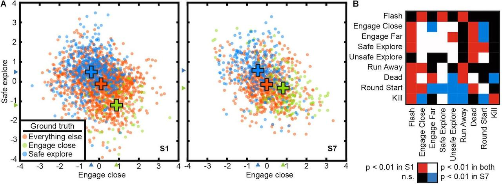

|  |
This 3T fMRI data set consists of recordings made from participants
who were playing the Counterstrike video game.
These data were collected as part of our 2021 study of state spaces
and attention (Voxel-based state space modeling recovers task-related
cognitive states in naturalistic fmri experiments., Zhang et al,
Front. Neuroscience, 2021). |